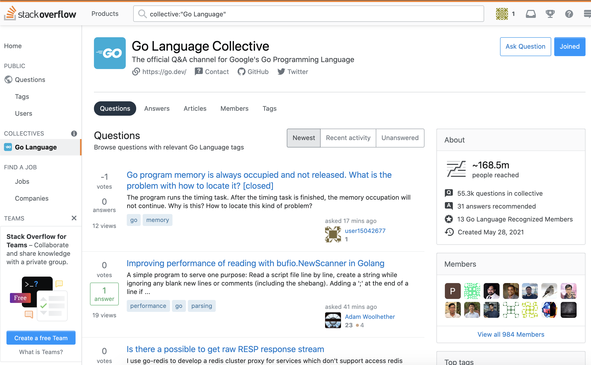

Go 启用新的官方问答社区
大家好，我是 polarisxu。
Go 官方宣布，在 StackOverflow 上启用新的问答社区，而这之前，官方的主要在 Google Groups。先简单介绍下 StackOverflow 的 Collective 。
01 Collective 是什么？
我们知道 StackOverflow 是一个问答社区，针对某一个类问题，一般通过 Tag 的形式汇集，比如 Go 语言的：https://stackoverflow.com/questions/tagged/go 。而 Collective 是 StackOverflow 推出的，专门用于为你喜欢的技术构建一个社区。
该社区最大的特点：帮助你更快地找到可信赖的答案，汇集了该领域专家，并围绕你最常使用的技术分享知识。
关于 Collective 更多介绍，可以查看官方博文：https://stackoverflow.blog/2021/06/23/collectives-stack-overflow/ ，这也是最近新推出的功能。
截止目前，只有两个 Collective 可用，分别是 Go 语言和 Google Cloud，相信马上会越来越多。
02 Go Collective
根据 Go 官方介绍 ，Go Collective 是 StackOverflow Collective 上的第一个开源项目，是 Go & StackOverflow 合作的结果。（https://stackoverflow.com/collectives/go ）

官方访问时间的截图，15 个成员，目前已经近 1000 成员。
相比 StackOverflow 上普通的 Go 问答，Go Collective 是一个改进版的 StackOverflow。它将保留从 StackOverflow 得到的问答经验。但它也将为 Gopher 提供一个家园，为 Go 社区领袖提供一个发表意见和帮助建立最佳实践的机会。
具体来说，根据 Go 官方介绍，Go Collective 有如下好处：
- 更快地找到可信的答案。一般，我们通过网上找答案之前，需要甄别以下方案的优劣，做一些对比。通过 Go Collective，你现在可以看到由 Go 团队推荐的答案，或者由认可的成员提供的答案，即 Go 团队成员、 Go Google 开发专家和 StackOverflow 用户，这些用户已经被 Stack Overflow 认可为 Go 生态系统技术的主题专家。当这些用户发布或编辑问题、提供答案或撰写文章时，他们将有一个徽章，标识他们为已认可成员。
- 希望在一个统一的地方获得需要的信息（这挺难的，需要时间，但真做到了，对社区来说是一件大好事）。StackOverflow 上的 Go Collectives 页面集中了所有与 Go 和相关标签相关的问题和答案以及其他内容。将包括从 Collective 到关键的 Go 网站的链接，同时 Go 网站也会引导 Gopher 到来到 Go Collective。
- 探索新的内容格式。Go 官方会随时更新技术，在 Go Collective 页面上可以找到更深入的产品信息，包括文章、长形式的内容，如 how-to 指南和公告。
- 赢得认可。StackOverflow 上的 Collective 也为 Go 官方提供了一种方式来认可你对社区的贡献。会有一个排行榜，你可以通过 Go Collective (见“成员”标签 )访问，这将有助于识别被指定为认可成员的可信任的贡献者。如果你有兴趣成为认可会员，请发邮件至 stackoverflow@golang. org。
如果你是 Go 领域专家，同时英语还可以，建议试试成为 Go Collective 认可会员。
03 总结
Go 官方和 Google Cloud 入驻 StackOverflow Collective，因为 Go 是构建云基础设施和应用程序的最佳语言，而 Google Cloud 是运行 Go 应用程序的最佳场所，所以现在 StackOverflow 是找到 Go 和云计算问题答案的最佳地点。
有官方的加持，相信 Go 社区会更好，遇到问题，大家可以多尝试上 Go Collective 查找。一些好问题、常见问题，我会考虑引入 Go 语言中文网，方便大家访问。
对 Go Collective，你有什么想说的吗？欢迎留言交流。